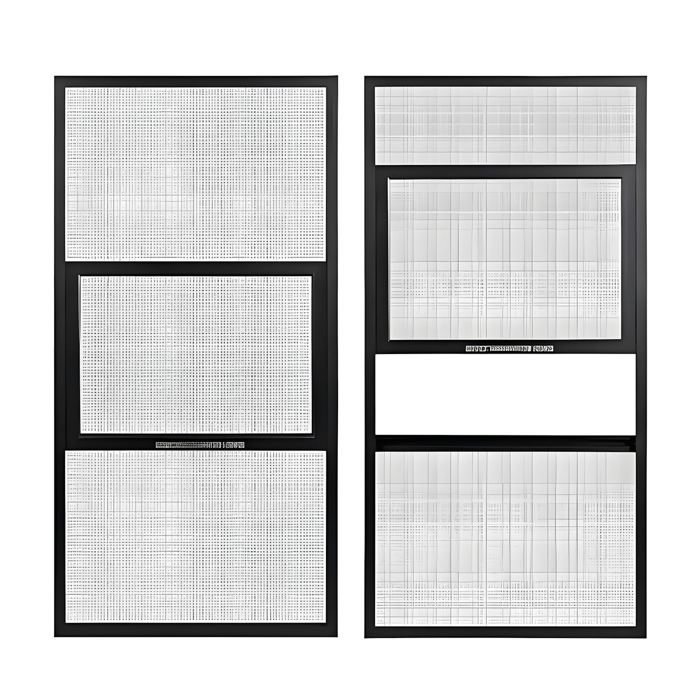

방충망은
틀은 두고
망만 새로 갈아요
틀이 멀쩡하면 통째로 살 필요가 없어요.
구멍 난 방충망도, 누렇게 바랜 방충망도 망만 바꾸면 돼요.
샷시 교체 때 같이 하면 한 번에

방충망 고르기
우리 집에 맞는 망은
따로 있어요
창이 어디에 있는지, 공간이 얼마나 되는지에 따라
맞는 방충망이 달라요.
가장 많이 해요
미세 촘촘 방충망
일반 방충망보다 그물이 촘촘해서 날벌레와 꽃가루를 더 잘 막아요. 먼지가 덜 끼는 자가세척 방충망도 고를 수 있어요.
- 잘 맞는 곳거실 · 방 · 주방 어디든
- 튼튼함
- 통풍
공간이 좁거나 현관이라면
롤 방충망 · 현관문 방충망
안 쓸 땐 블라인드처럼 말려 들어가요. 현관문에 달면 문을 열어두고 환기할 수 있어요.
- 잘 맞는 곳현관문 · 여닫이 창
- 튼튼함
- 통풍
간단 자가진단
지금 방충망,
바꿀 때가 됐을까요?
하나라도 해당하면
여름이 오기 전에 바꾸시는 걸 권해요.
방충망 교체, 이런 게 궁금하셨죠
안 세셔도 돼요. 창 전체가 나오게 사진만 찍어서 보내주시면 저희가 세서 알려드려요.
네, 직접 가져오셔도 돼요. 작업장 위치와 맡기실 시간은 전화로 먼저 맞춰주세요.